Installation and Operation Manual
For contact info, please see the Sci.Electronics.Repair FAQ Email Links Page.
Copyright © 1994-2025
Reproduction of this document in whole or in part is permitted if both of the
following conditions are satisfied:
1. This notice is included in its entirety at the beginning.
µMD2 is an inexpensive system for precision readout of displacement
(change in position), angle, straightness, and more
in metrology applications using (homodyne) interferometry
with single frequency lasers,
as well as devices like linear and rotary
encoders which produce Quad-A/B signals. There is also limited support
for use in heterodyne interferometry using two frequency lasers. The
later is currently a "works in progress", so for now,
Micro Measurement Display 1 (µMD1)
is recommended for this with some exceptions that will be noted below.
While targeted for
experimenters, hobbyists, and researchers, there is no reason why
µMD2 can't also be of value in science and industry.
The hardware platform is a readily available inexpensive
microcontroller development board which communicates via
USB to a Windows PC, laptop, netbook, or tablet.
The graphics below show a rotary optical encoder which uses a pair of LEDs and
photodiodes physically offset by 90 degrees to generate Quad-Sin-Cos analog
signals which are then thresholded to yield Quad-A-B digital signals.
The specific type of sequence is called a "Gray" code (not based on color
but attibutable to someone named Frank Gray) and has the property that any
possible allowable change in value is a change in only a single bit.
This eliminates the ambiguity with sensors using the normal binary order
where two bits can change at not quite the same time.
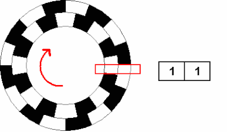 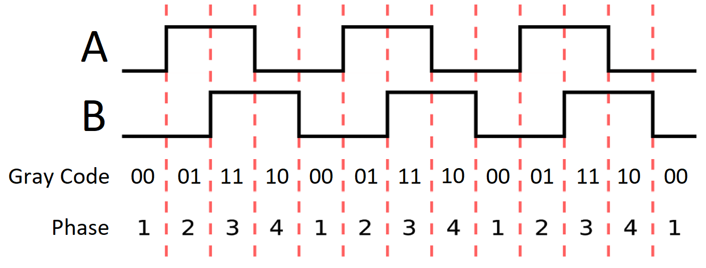
(The animated encoder graphic seems to be all over the Web. If anyone knows
who the original copyright holder is, I will acknowledge them.)
Many other types of encoders produce similar signals. They may use
optical, mechanical, or magnetic sensing, among others.
The input to µMD2 are the digital signals which can have change rates
of many 10s of MHz. The decoding is done in hardware and it is unlikely the
upper limit will be reached by any practical application.
There is no support for analog inputs now and probably never will be.
However, there are hardware quadrature interpolators available that go in-line
with the analog signals to multiply the effective resolution by anywhere
from 2 to 1,000 or more, so they are a possible option were higher
resolution is required. Those made by Renishaw are relatively
inexpensive on eBay. There are also ICs available that perform
this function.
For use with interferometers, the only difference is that the origin of
the analog signals are from a different type of detector:
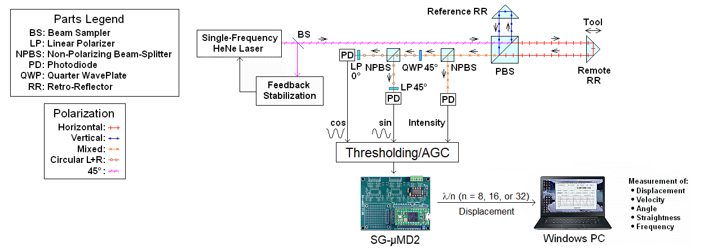
This also applies to devices like Ring Laser Gyros (RLGs) which have
similar types of detection schemes.
For homodyne, the native resolution of single-pass interferometers
is 1/8th wavelength,
usually 633/8 or ~79 nm. But depending on the optics, this may be doubled
or quadrupled without requiring interpolation. Specifically, the Linear
Interferometer (LI, shown above) and Single Beam Interferometer (SBI)
have a native resolution of ~79 nm; the Plane Mirror Interferometer (PMI) and
High Stability Plane Mirror Interferometer (HSPMI)
have a native resolution of ~40 nm,
and the High Resolution Plane Mirror Interferometer (HRPMI)
has a native resolution of ~20 nm. It is theoretically possible to convert
a PMI or HSPMI into an HRPMI with the addition of a cube corner but the
alignment could be quite hairy.
The heterodyne setup is similar except for the use of a two frequency laser:
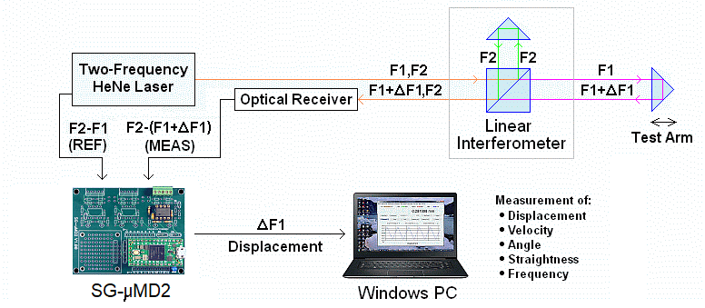
For heterodyne, the native resolution of single-pass interferometers
is 1/4th wavelength for µMD2,
usually 633/4 or ~158 nm. But depending on the optics, this may be doubled
or quadrupled without requiring interpolarion. Specifically, the Linear
Interferometer (LI, shown above) and Single Beam Interferometer (SBI)
have a native resolution of ~158 nm; the Plane Mirror Interferometer (PMI) and
High Stability Plane Mirror Interferometer (HSPMI)
have a native resolution of ~80 nm; and the High Resolution Plane Mirror
Interferometer (HRPMI) has a native resolution of ~40 nm.
Phase-based interpolation in the µMD2 firmware increases the end-point
resolution to well below 1 nm.
However, for stationary or slowly varying displacement (order of less than one
wavelength per second), the use of a large value for the moving average
in the GUI should result in a similar improvement in resolution as the
sampling can be set up to be essentially random.
Note that µMD2 refers specifically to the combination of the
Teensy-based hardware and firmware. It's possible there could be
µMD3, .... µMDn - or µMD0 - in the future using
the same GUI. :) µMD1 is already taken for the original version
supporting heterodyne interferometry using two frequency lasers.
This document provides installation and operating instructions for the
µMD2 hardware and software using the SG-µMD2 PCB.
The PCB layout includes the line receivers and associated
components for up to 3 measurement axes, eliminating hand wiring.
It may also have small OLED display for local monitoring of the
encoder or interferometer counting (primarily for diagnostics).
It is assumed the reader is
familiar with homodyne and/or heterodyne
interferometry. Linear and rotary encoders generate signals to those from
homodyne interferometers.
If not, back up and start with Sam's Laser FAQ: Interferometers for Precision Measurement in
Metrology Applications.
Mote: Throughout this document, "µMD2 board" or simply "board" refers
to the SG-µMD2 PCB. "µMD" refers to the Windows Graphical
User Interface (GUI), which is identical for µMD1 and µMD2.
Phase interpolation implemented in firmware (V261.28 or above) provides
sub-nm end-point resolution. For an amplitude of 300 nm, the frequency
response is over 20 Hz. This means that the displacement will settle in
to the correct value with sub-nm accuracy within a small fraction of a
second. Super-sampling in firmware should be available soon to provide
resolution for larger displacements of a few nm or better. However, your
mileage may vary as even being able to provide a stable enough setup to
be able to make sense of such small changes is a challenge. Interpolation
currently only works for lasers with a split frequency of less than
around 8 MHz (which excludes Zygo lasers except the 7705) but we're
working on that. ;-)
An adjustable weighted average to smooth data may be applied to the readout
and graph.
Even without interolation, for stationary or slowly varying displacement,
the use of a large value for the moving average
in the GUI should result in a similar improvement in resolution as the
sampling can be set up to be essentially random. To take advantage of this,
the and "#define Interpolation" and "#define REF_Sync" must be commented out
in the firmware (V2.61 or above). Without doing this, sampling syncs
with REF and displacement will tend to be in increments of 1/2, 1/4, or 1/8
wavelength depending on the interferometer optics.
Specifications are subject to change without notice. :-)
All Rights Reserved
2. There is no charge except to cover the costs of copying.
DISCLAIMER
µMD2 is intended for use in hobbyist, experimental, research, and other
applications where a bug in the hardware, firmware, or software, will not
have a significant impact on the future of the Universe or anything else.
While every effort has been made to avoid this possibility, µMD2 is an
on-going development effort. We will not be responsible for any consequences
of such bugs including but not limited to damage to the construction crane you
picked up on eBay for $1.98 + shipping, financial loss from ending up in
the Antarctic when the compass orientation provided by
your home-built ring laser gyro was off
by 1,536 degrees, or bruising to your pet's ego from any number
of causes directly or indirectly related to µMD2. ;-)
Acknowledgment
Thanks to Jan Beck for selecting the Teensy 4.0 and writing and testing
the initial version of the firmware and providing support for enhancements
and bug fixes. He was also instrumental in developing the initial
µMD1 firmware and GUI. And for getting me interested
in actually getting involved in that project. If anyone had told me
six months ago that I'd be writing code in C, MIPS assembly language,
and Visual Basic - and enjoying it (sort of) - I would have suggested
they were certifiably nuts. ;-) Jan maintains the master GUI source code
as well as slightly different versions of both the µMD1 and
µMD1 firmware and a development blog on these and other projects.
Introduction
Note: Links to Web pages external to this document will open in a single
separate tab or window depending on your browser's settings.
Rotary Encoder Digital Signals as a Function of
Orientation
Typical Homodyne Interferometer Setup using µMD2Typical Heterodyne Interferometer Setup using µMD2
Specifications
Computer and Operating System Requirements
Everything that follows assumes the use of Windows. If you're
really smart and run Linux instead, sorry. ;-) (However, the GUI
may run on Linux under something called "wine" so there may be hope.) The
µMD2 GUI is known to work under Win XP, Vista, 7, and 10,
and should be fine on
Win 8 as well. Microsoft Net Framework 4.0 or higher is required
to run µMD2. Net 4.0 or a more recent version is probably on
your computer already but is available free from the Microsoft Web site.
Win 7 or higher may be required to compile and upload the firmware.
Minimal System Constructed on Solderless Breadboard
Since the external interface to the Teensy is very simple, a version of
µMD2 can be put together on a solderless breadboard (or prototyping
board). While this may not run at the maximum speed supported
by the Teensy, it would be a quick way of getting something working.
Some typical basic interface circuits for the homodyne version
are shown below:
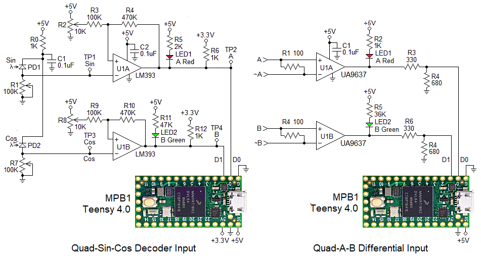
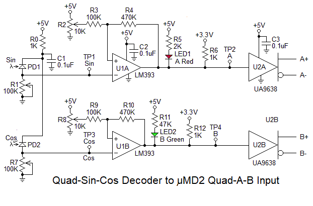
CAUTION: Teensy pins are NOT 5V tolerant - they will be unhappy if a 5 V signal is connected to them directly. Thus any signal that may go higher than 3.3 V should NEVER be connected to them, even for an instant. Bad things may happen. In the case of the Quad-Sin-Cos decoder, the LEDs provide enough voltage drop so the input to the Teensy will not be greater than 3.3 V since the outputs of the LM393 are open collector. For the Quad-A-B input, the resistor voltage dividers reduce the output of the UA9637 under 3.3 V (exactly as on the SG-µMD2 PCB.
The LM393 is an 8 pin DIP so it, along with the Nano and other parts, will easily fit on the typical 250 column 2-1/4 x 3-1/4 inch solderless breadboard with room to spare. For the Quad-Sin-Cos Decoder version, the photodiodes can be somewhat remote connected with twisted pairs. The 1M ohm positive feedback resistor adds a small amount of hysteresis to filter out fuzzy noise on the signals which appears to be capable of inducing oscllation and totally messing up the displacement due to bogus excessive slew rate. Or something. :) For the Quad-A-B Differential version (RS422), the input cables can be long and also be twisted with a single 100 ohm resistor between the two inputs for termination, but there needs to be a common ground connection somewhere. While the UA9637 is essentially a voltage comparator with built-in hysteresis, it CANNOT be used with photodiode inputs because its bias current is too high. The difference in resistor values for the red and green LEDs balances their brightnesses, mostly. Of course, the LEDs aren't *really* essential. ;-)
Tne value of 100K for the photodiode load resistors has been selected as suitable for the typical ~1 mW SLM laser to result in the signal going from near 0 to around 3 V. It's not necessary to have them be adjustable since the threshold settings are adjustable. But you can if you wish, and of course change their value to reflect the real world situation of your laser power and losses in the Quad decoder. If the source is differential analog (typically each 1 V p-p), the signals can go directly to the comparator inputs dispensing with the load resistors and trim-pot.
For these simple setups, a solderless breadboard with 25 columns should be adequate. The Nano with soldered pins can plug in at the right side with the USB connector facing out, and the LM393 and associated components can be placed next to it. Those connections that cannot be made with component leads should use pieces of #22-24 AWG solid wire.
The diagram on the far right converts from the photodiode signals to the differential signals required by the SG-µMD2 PCB. It assumes the default wiring in the assembly instructions. With a bit more work, the differential line drivers (U2) can be eliminated by going directly into the A+ and B+ inputs of SG-µMD2 with the signals on TPA and TPB, and the the A- and B- inputs biased at around 1.5 V by wiring up the on-board reference network and without the 150 ohm or 100 ohm termination.
The "cables" for the photodiodes can simply be twisted pairs. Keep them short but a foot or so should be fine. If the source is something else like a commercial optical detector or signals from a self-contained laser/interferometer, a different type of termination than the load resistors may be needed.
For more information on the Quad decoder and interface, see Construction Guidelines for Basic Quadrature-Sin-Cos Decoder and Quad-A-B Interface Kits. Some of it is redundant but there are more detailed instructions on mounting the optical parts and the actual circuits and wiring. Ignore the specifics for µMD0. ;-)
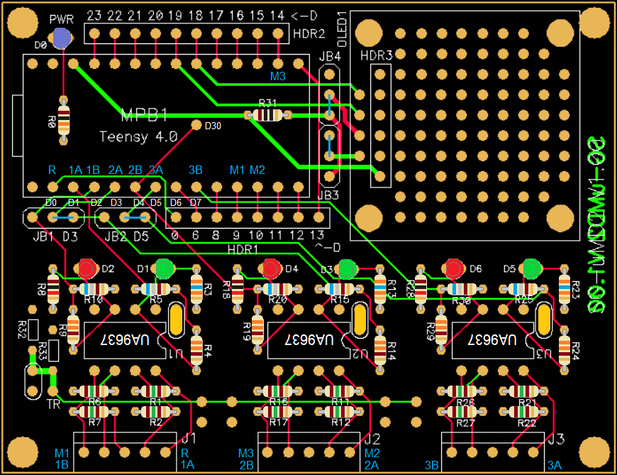
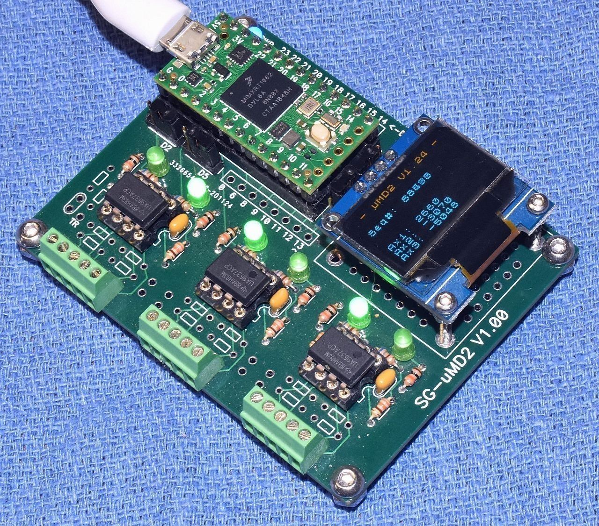
The diagrams below show layout diagrams of the V1.22 SG-µMD2 PCBs populated for various interferometer configurations:
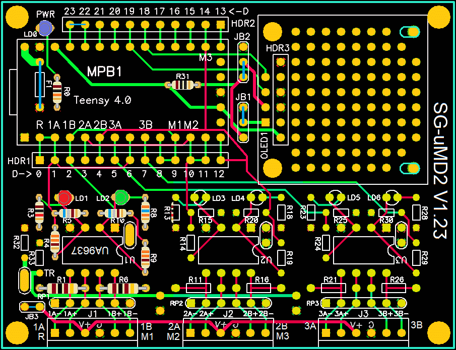
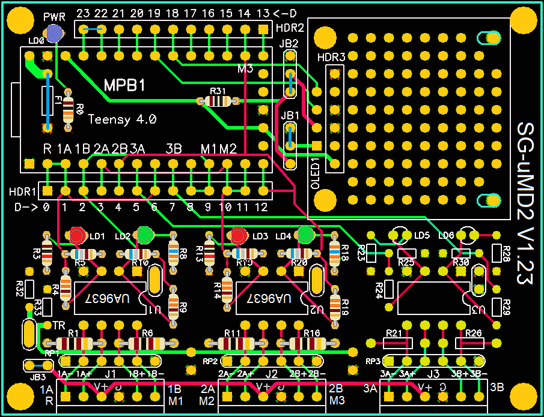
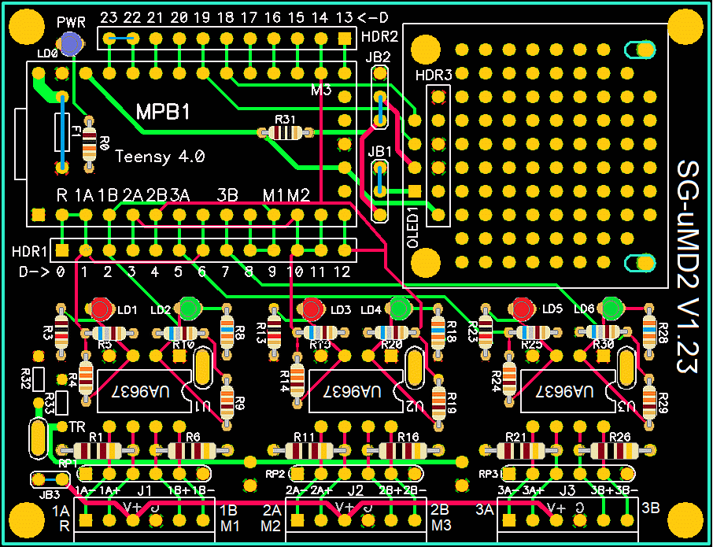
V1.22 and V1.23 are virtually identical. Kits are currently shipping with the V1.23 PCB. You will almost certainly not see a V1.00 PCB.
It is not anticipated that later versions will differ in any major way, but there will be some changes so a different assembly manual will be provided for each where appropriate since some part numbers and locations may have changed. These manuals include complete parts lists and Heathkit™-style step-by-step assembly instructions.
For differential RS422-type signals, it's usually not necessary to run the return to the board even if there is no common ground connection between the board and their source. The terminating resistors will provide the ground reference. In fact, under some conditions where everything is tied together with a common ground, the return connections could add noise due to a ground loop. The line receivers only care about the difference between the voltage levels for each signal pair as long as the absolute voltage levels are within their common mode and absolute voltage specifications. For cables of a few feet or less, it's almost certain that no connections are required for the Returns. But for long runs, shielded cable or twisted pairs may be desirable. This won't apply to most hobbyist/experimenter applications. :) There has to be a common Ground somewhere though, usually via the power supply.
For single-ended signals like TTL, there are locations on the µMD2 PCB for a voltage divider to set a threshold reference. Check the schematics. A trace with runs from there across the board with pads near each axis so it's easy to wire it to the unused UA9637 inputs. For TTL, the threshold should be set at around 1.4 V. For analog 0-1 V signals, set it at 0.5 V. If they aren't all the same, some creativity will be required. :)
Using the 6 pole screw terminal blocks, attaching cables is a cinch. Each of the pairs of outer two pins is the signal and its complement. (Which goes to which doesn't much matter.) The center pins are GND and an optional source of +5 VDC. (For Rev 1.00 SG-µMD2 PCBs, these are 5 pole screw terminal strips and there is no +5 VDc source.) Strip the wires to about 3/16" or 4 mm and insert so that no bare wire is exposed, tighten the screw. If connectors are preferred, 5 pin Molex/AMP headers can be installed in place of the terminal blocks (not included in the kits but readily available). For other connector types, adapters can be easily constructed. Or 2 pin connectors can be substituted if desired.
Cables will need to be constructed for REF from the laser and MEAS from the optical receiver. For runs of a few feet or less, twisted pairs for REF/~REF and MEAS/~MEAS will suffice. The common/grounds should be run to the common point of the power supplies but they don't need to be in the cables and the cables don't need to be shielded. The 150 ohm terminating resistors on the µMD1 board will provide the needed connection so that the inputs to the line receiver are at the proper level. For the normal RS422 differential signals provided by the 5517/5501B laser and 10780 optical receiver, BOTH the true and complement polarities of each one must be connected to the µMD1 or µMD2 inputs or else strange and random behavior will result. For a single channel Homodyne system this means 1A and 1B, and 2A and 2B. For a single channel Heterodyne system this means REF and ~REF, and MEAS1 and ~MEAS1 as shown below for µMD2 using a 5517 laser head:
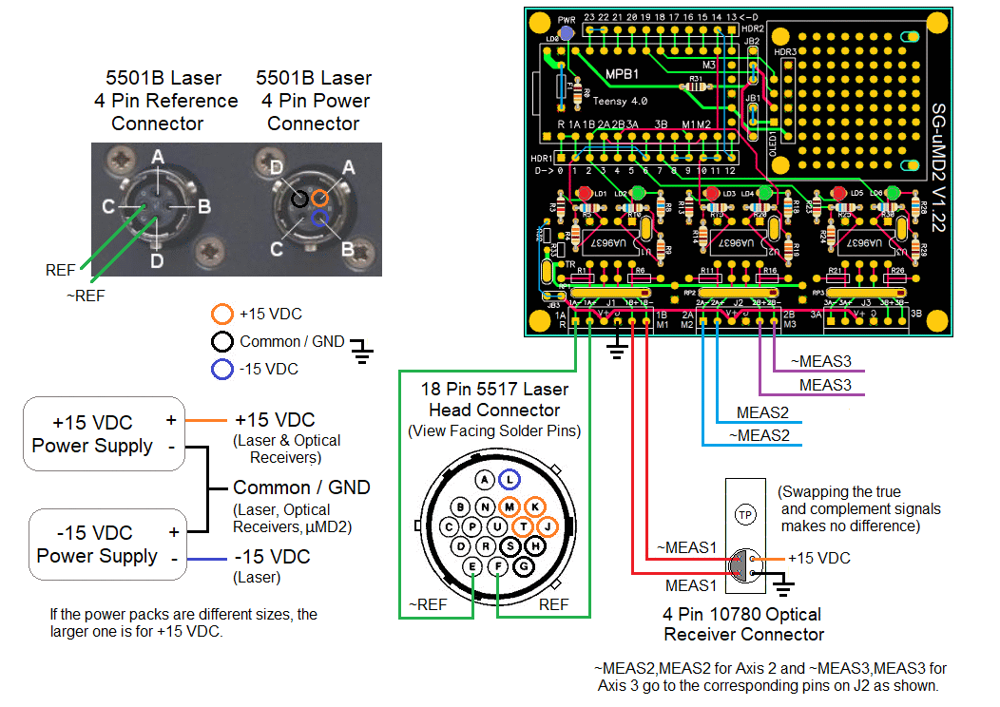
The extension to multi-channel systems should be obvious. ;-)
Pins are labeled on the Teensy 4.0 PCB:
Pin Arduino Labeling Homodyne Heterodyne GPIO Pin * ------------------------------------------------------------------- U1-1 GND GND GND U1-2 D0 1A REF GPIO6-03 U1-3 D1 1B - GPIO6-02 U1-4 D2 2A - GPIO6-04 U1-5 D3 2B - GPIO6-05 U1-6 D4 - - GPIO6-06 U1-7 D5 3A - GPIO6-08 U1-8 D6 - REFI GPIO7-10 U1-9 D7 3B - GPIO7-17 U1-10 D8 - MEAS1I GPIO7-16 U1-11 D9 - MEAS1 GPIO7-11 U1-12 D10 - MEAS2 GPIO7-00 U1-13 D11 - MEAS2I GPIO7-02 U1-14 D12 - MEAS3I GPIO7-01 U1-15 D13 Stutus LED - U1-16 D14 - MEAS3 GPIO6-18 U1-17 D15 - - U1-18 D16 - - U1-19 D17 - - U1-20 D18 - - U1-21 D19 - - U1-22 D20 - - U1-23 D21 - - U1-24 D22 - - U1-25 D23 - - U1-26 3.3V 3.3V 3.3V U1-27 GND GND GND U1-28 VIN (5V) VIN (5V) VIN (5V)
* GPIO pins listed only for coding geeks. ;-)
CAUTION: Teensy pins are NOT 5V tolerant - they will be unhappy if a 5 V signal is connected to them directly. Thus any signal that may go higher than 3.3V should NEVER be connected to them, even for an instant. Bad things may happen. 3.3V is acceptable through a current limiting resistor (just to be doubly safe, for the micro that is). Hooking raw power to what may be a logic output (accidentally or otherwise) is never a good thing! P.S. "Unhappy" and "Bad things may happen" could mean that you'll ruin the Teensy board.
The pin assignments for REF, MEAS1, MEAS2, and MEAS3 for heterodyne are preliminary and may change without any notice of any kind, even to the developers.
The current default firmware loaded with SG-µMD2 PCBs shipped alone or with Hobby Special and DIY Displacement Measuring systems kits is heterodyne V2.20. If you are totally all thumbs when it comes to dealing with computers, I will consider loading a different version. ;-) But if there is even an upgrade which is around 99.9999999....% likely, you will have to deal with it eventually.
The (non-Alpha) versions of the firmware are absolutely guaranteed to be new and improved in terms of features, capabilities, and performance. This probably means there will be some new and improved bugs as well. The Alpha versions are even more likely to have some juicy bugs. Please contact us via the link at the top of this page should any dare to appear (or for any other legitimate reason). ;-) And I don't believe there are any Alpha versions, so that comment doesn't apply.
There is separate firmware for homodyne and heterodyne and whatever version is pre-loaded will likely be out of data anyhow. :( :) For this reason, and because it may be necessary to configure the firmware, one of the following should be compiled and loaded:
Note: For all new firmware, sub-versions will have the format: .XX where XX is a number from 01-99 (rather than letters as it was before). It's just simpler to format. ;-)
V2.20 includes support for the optional OLED display of REF and MEAS(s). The "#define OLED..." needs to be uncommented out and the OLED library must be installed.
V261.39 provides an absolute accuracy of a few nm and sub-nm resolution for slowly varying displacement. However, it is still experimental; v2.20 is recommended for general use. V261.39 (and V261.40 and V261.41 below) require PCB artwork v1.22 or later.
v2.47r provides optional display of REF frequency on OLED, either by itself in large numbers or in small numbers along with the other annotations. This can be used as a stand-along frequency counter from 10 Hz to >20 MHz, which is how it is set up here and should work fine for monitoring Zeeman lasers with an HP 10780 or SG-OR3 optical receiver. Use for µMD2 displacement at your own risk. ;-) This is actually the pre-Alpha interpolation firmware which has bugs. Definitely avoid the temptation to enable the interpolation options (which will also require a few jumpers on the SG-µMD2 PCB prior to PCB artwork V1.22). I cannot guarantee that the Sun will not go nova at a random time under some unspecified conditions if that code is run. :( :) You were warned. ;-)
Homodyne V1.26: This should be stable.
Input Timer Arduino Pin Teensy Pin
-----------------------------------------
1A 1 D1 3
1B 1 D2 4
2A 2 D3 5
2B 2 D4 6
3A 3 D5 7
3B 3 D7 9
Heterodyne firmware V2.20 and V3.xx: These free up D13 to be the used for status or the heartbeat indicator, as well as shortening PCB trace lengths. V2.20 and V2.09 are otherwise functionally equivalent. These also apply to V2.47r and other newer versions should they appear.
Input Timer Arduino Pin Teensy Pin
-----------------------------------------
REF 2 D0 2
MEAS1 4 D9 11
MEAS2 1 D10 12
MEAS3 3 D14 16
Heterodyne firmware V2.09: Original released version. About the only reason to use V2.09 would if you have already wired the jumpers on the SG-µMD2 PCB with these pin assignments.
Input Timer Arduino Pin Teensy Pin
-----------------------------------------
REF 4 D9 11
MEAS1 1 D10 12
MEAS2 2 D13 15
MEAS3 3 D14 16
The status LED on D13 is the heartbeat/status indicator for homodyne depending on firmware version. Currently it pulses at between a 1 and 2 Hz rate. Since heterodyne firmware V2.09 MEAS2 uses that pin, it is not available. The availability of that critical LED is the major reason for the firmware upgrade. This is all fully subject to change without any notice. ;-)
Most of these details are really only relevant if there is a desire to modify the firmware, which is not advised since no support will be provided if even 1 character in a comment field is changed without prior approval from µMD2 Central. :) This approval process normally requires a minimum of 3 years, 7 months, 24 days, 11 hours, 35 minutes, and 22.37 seconds, but often takes a lot longer. :-) For wiring using the firmware provided, only the pin assignments matter.
Note that if updating firmware, the GUI may also need to be updated and vice-versa. However, given the stability of the GUI, this is unlikely. And none of the 5,263,782.5 known bugs are significant enough to recall the µMD2 crew back from their extended vacation any time soon.
Here is the communications format between the firmware and GUI. This information is of little relevance if using the GUI, but will be useful if writing your own application software or for data analysis. Each of the values is sent as an ASCII string representing a signed (if needed) decimal number separated by spaces at the sampling rate. The firmware maintains a FIFO buffer so that if the USB data is delayed for some reason, no data should be lost (hopefully):
The same format is used for both homodyne and Heterodyne modes but not all fields will be filled in or relevant for homodyne.
Standard (Single Axis) Data (8 values):
0: Axis 1 Count/REF Frequency Count* = REF frequency/Sample Frequency
1: MEAS Frequency Count 1* = MEAS 1 frequency/Sample Frequency
2: Displacement 1 (in 1/2, 1/4, or 1/8 wavelength)
3: Velocity Count 1 = (Displacement 1 - Previous Displacement 1)/Sample
Frequency
4: Phase 1 = Signed fractional offset between Displacement increments in
2's complement format with a range of -1/2 to +1/2. There are two
versions:
* 8 bit Phase: The typical range of values sent is -128 to +127. This
is supported by µMD2 and and an option in µMD2.
* 16 bit Phase: The typical range is -32768 to 32767. This is the
default for µMD2.
As a practical matter, which one is used is probably irrelevant. ;-)
5: Sequence Number (Unique serial number for each sample)
6: LowSpeedCode (See below)
7: LowSpeedData (see below)
The following 8 values will also be sent when Multiple Axis Mode is active:
8: Axis 2 Count/MEAS Frequency Count 2*
9: Displacement 2
10: Velocity Count 2
11: 0/Phase 2
12: Axis 3 Count/MEAS Frequency Count 3*
13: Displacement 3
14: Velocity Count 3
15: 0/Phase 3
LowSpeedCode (specifies contents of LowSpeedData):
0-99: GUI Data/Control:
0: No Data
1: Laser Power
2: Signal Strength
3: Temperature 1 (XXX.YY, °C, 0 to 70.00)
4: Temperature 2 (XXX.YY, °C, 0 to 70.00)
5: Pressure (XXX.YY mBar, 500.00 to 2000.00)
6: Humidity (XXX.Y percent, 0 to 100.0)
8: Sample Frequency (XXX.YY Hz)
10: Firmware Version (XXX.YY)
20: Homodyne Interferometer (if non-zero)
Low byte: # homodyne axes
Next byte: counts/cycle (4 for quadpulse)
(Not all of these are currently implemented.)
100-199: Diagnostics
200-255: Reserved
* The REF and MEAS Counts are the incremental change since the last sample, NOT the total value.
The Arduino IDE will work with all versions of the firmware. As of Winter 2025, the current version of the Arduino IDE is V2.3.4 (but older versions like V1.8.13 also work). It can be downloaded free from the Arduino Web Site. Save it to your Downloads directory or any other convenient location. It will probably be an executable, so just run it. There is no actual installation, it will just unpack and copy files to the selected Arduino program directory. (With Windows, this is typically located under "Program Files" or something similar but has no relation to where the actual sketches and contributed libraries may be located.) It can be named anything but "Arduino IDE" or "Arduino V1.8.13" are suggestions.
Go to Download Teensyduino.... and follow the instructions there to add the link under "File", "Preferences". If this is your first time using an Arduino board, it may ask to install the device driver. When it has finished, start the Arduino IDE and go to "Tools", "Board", "Teensyduino", and select "Teensy 4.0".
Note: The current version of the Arduino IDE (V2.3.4 as of Winter 2025) may not work with the latest version of the "Teensy (for Arduino IDE 2.0.4 or Later)..." V1.59 in the Boards Manager. I could not get sketches to compile successfully with that. So if V1.59.0 was installed automatically with the Arduino IDE and compiling even the Blink sketch produces errors, back it off the V1.58.2. Click on the Boards Manager (along the left side - the icon below the file folder icon). Put "teensy" in the search box and use "All" for the Type. The current version will be displayed and there will an option to select V1.58.2. However, this may not be an issue with a clean installation of the Arduino IDE.
If the OLED display is enabled ("#define OLED 1" is present and not commented out near the start of the firmware), an additional library will be required. Go to "Tools", "Manage Libraries", search for "u8x8" and install the library that it finds.
Plug the board into any available USB port. Windows should recognize it. Go to "Tools", "Port", and select the correct port. With the µMD2 firmware, it will be named something like "COM7 Serial (Teensy 4.0)".
Note: Plugging in a virgin :) Teensy (one probably having only the Blink sketch or another one that doesn't open a COM port) may result in Windows issuing notifications about installing a new device. It's best to wait until that completes before attempting to upload a sketch. Before then, the COM Port in "Tools","Port" may be something strange. This should not be an issue with Teensys having µMD2 firmware pre-loaded.
Windows seems to like to reassign Teensy COM ports for unfathomable reasons,
so check COM port setting for uploads and the µMD2 GUI.
The firmware (via the links, above) is provided as a source file which probably has an extension of ".pde" or ".ino" (though the specific name doesn't matter - it's just a text file). However, the name may NOT contain any dashes "-" due to the peculiar restrictions of Java or something. Make a directory with the name of the firmware (without the extension) and put the firmware file there. For example, if the file is named umd2_FW_v123.ino, make a directory called umd2_fw_v123. and put umd2_FW_v123.ino in it. Note that case matters so the name of the directory and name of the firmware file (without the extension) must match case character-by-character exactly. Thus Interferometer.pde is not the same as interferometer.pde
In my experience so far, compiling and uploading firmware has been a bit fiddly for the Teensy 4.0, mostly related to the USB (COM) port assignments and whether or not the software or hardware reset button needs to be depressed. These were never issues with the Atmega boards. More to come on this topice as it becomes available.
(Or for testing, just go to Files->Examples->01.Basics->Blink and upload that. It's easy to make change and then see immediately that thay are taking effect without risking the rest of the Universe.)
Windows should recognize that the COM port dropped out momentarily and reappeared. The µMD2 firmware will be spitting out sequences of numbers at the sampling rate. These may be viewed by going to: Tools->Serial Monitor. With no interferometer hardware, they will be rather boring with only the sixth value incrementing sequentially (Sequence Number) and the 7th and 8th values cycling among some obscure numbers (Low Speed Code and Low Speed Data). To Windows, the board appears as a COM port. Thus any application that processes COM port data can be used in place of the µMD2 GUI, should this be desired.
If the firmware crashed somehow, Windows may display a message saying something about the USB port not working. But that shouldn't happen with any firmware downloaded from here. :) And on rare occasions a cosmic ray or hardware glitch may result in the upload failing with a checksum or other error. Just try again. If the selected COM port is incorrect, cancel and retry.
Sometimes the Arduino IDE decides to change the COM port for no good reason I can fathom. Go to Tools->Port, and make sure it has selected the COM Port with "(Teensy)" after it.
Once loaded, the firmware is retained in non-volatile memory so this only needs to be done at most once - or until a firmware update is available!
The firmware may also be compiled without uploading by using Ctrl-R. Since you haven't messed with the code, it should compile without errors. This is slightly faster for testing and doesn't use the board at all so it can be off doing whatever it pleases. :)
Important: Terminate any instances of the µMD2 GUI before uploading the firmware and put the board into program mode (again if necessary) AFTER doing this even if LED1 is flashing.
0 0 0 0 0 18016 0 0 0 0 0 0 0 18017 10 124 0 0 0 0 0 18018 8 100000 0 0 0 0 0 18019 0 0 0 0 0 0 0 18020 0 0 0 0 0 0 0 18021 0 0 0 0 0 0 0 18022 0 0 0 0 0 0 0 18023 0 0 0 0 0 0 0 18024 0 0 0 0 0 0 0 18025 0 0 0 0 0 0 0 18026 0 0 0 0 0 0 0 18027 0 0 0 0 0 0 0 18028 0 0 0 0 0 0 0 18029 20 4099 0 0 0 0 0 18030 0 0
If all three axes are enabled in the firmware, the terminal window should begin spewing forth data similar to the following:
0 0 0 0 0 18016 0 0 0 0 0 0 0 0 0 0 0 0 0 0 0 18017 10 124 0 0 0 0 0 0 0 0 0 0 0 0 0 18018 8 100000 0 0 0 0 0 0 0 0 0 0 0 0 0 18019 0 0 0 0 0 0 0 0 0 0 0 0 0 0 0 18020 0 0 0 0 0 0 0 0 0 0 0 0 0 0 0 18021 0 0 0 0 0 0 0 0 0 0 0 0 0 0 0 18022 0 0 0 0 0 0 0 0 0 0 0 0 0 0 0 18023 0 0 0 0 0 0 0 0 0 0 0 0 0 0 0 18024 0 0 0 0 0 0 0 0 0 0 0 0 0 0 0 18025 0 0 0 0 0 0 0 0 0 0 0 0 0 0 0 18026 0 0 0 0 0 0 0 0 0 0 0 0 0 0 0 18027 0 0 0 0 0 0 0 0 0 0 0 0 0 0 0 18028 0 0 0 0 0 0 0 0 0 0 0 0 0 0 0 18029 20 4099 0 0 0 0 0 0 0 0 0 0 0 0 0 18030 0 0 0 0 0 0 0 0 0 0
If there is a display like one of these with the 6th number incrementing by 1, the board is probably working.
(Should you care, the 6th and 7th values are the "Low Speed Code" and "Low Speed Data", respectively. 10,124 is the firmware version 1.24; 8,100000 is the sample rate of 1,000 x 100, and 20,4099 specifies 3 homodyne axes + a homodyne multiplier of 4 x 256.) Refer back to the main µMD2 manual for more info.
For the REF frequency display, the following statements near the beginning of the firmware should be set as shown below:
#define OLED 1 // Enables OLED // #define OLED_Displacement 1 // Disables display of displacement counts #define OLED_REF 2 // Enables display of REF frequency
This will display the REF frequency in large digits on the OLED. Other combinations of the #defines for these three parameters may result in strange behavior but feel free to fix that. ;-)
Only power to the SG-µMD2 PCB is required for the REF frequency
display. Power is most conveniently provided by a USB port, USB charger cube,
or 5 VDC power supply to +5V on the board or via the USB connector.
(A USB backup battery pack would also work but these may shut down
if the current is too low, as is likely here.) If connected to a USB port,
µMD2 will still behave normally for measurements.
The GUI has been stable for several years with only a few updates mostly relating to environmental compensation, and the last one to upgrade the copyright to 2024. ;-) It is compatible with all versions of the board/firmware: µMD0, µMD1, and µMD2.
Added option to use 16 bit phase values for interpolation and to display firmware version in XXX.YY format.
This version may have broken the number converson - again. If you have a problem, use the one below unless you need interpolation, in which case feel free to complain. ;-)
Possible bug fix: Forces number conversion to use USA format to prevent the GUI from crashing if the PC was set up in a different country. This fix may have gotten corrupted in the previous update.
Changed copyright from 1994-2024 to 1994-2025. ;-)
Changed copyright from 1994-2020 to 1994-2024. ;-)
Bug fixes: Extended range of wavelengths from 0.001 nm to 10 mm; fixed diagnostic readouts for homodyne mode, more or less.
Bug fixes: Forces number conversion to use USA format to prevent the GUI from crashing if the PC was set up in a different country. Eliminates the gross scale error in Frequency plots (but still may be off by 20 percent depending on sample rate, and more if using the ultra-low sample rate for hobbyist laser support).
Additions: Adds homodyne support for selectable number of counts/cycle defined in the firmware. Updates copyright date. ;-)
Save the µMD2 GUI .exe file into any convenient directory. (There's a small chance that the first time it's run, an error is produced since there is no configuration file associated with it. Simply continue and the GUI will come up. When it is closed using "Finish", valid settings will be saved so that the error should ot appear again.)
When started, the µMD2 GUI (henceforth simply called the "GUI") comes up in Displacement mode with graphing enabled. The only action required by the user is to select the USB COM port. Once selected, the readout and graph will begin displaying the interferometer data.
Even if there is no encoder or interferometer hardware attached to the board, it is possible to confirm that the Teensy is talking to the GUI. Go to "USB Port" and select the same COM as used to upload the firmware. The graph should immediately start scrolling to the left indicating that it is accepting valid data, even if it is all 0s. With homodyne, there will be no error detection, but the fact that it started scrolling means the communications link is working.
Important:
IMPORTANT: The pushbutton on the Teensy PCB is NOT for reset, it initiates a load of the last compiled firmware. Go figure. :( :) So, the only real way to reset the firmware is to unplug the USB cable. A hard reset button may be added to future versions of the SG-µMD2 PCB.
For homodyne mode with µMD2, the default sample rate is fixed at 1,000 samples/second. (1 ks/s/). This can be changed in the firmware. While doing so is strongly discouraged, setting to one of those used by µMD1 (457.76, 610.35, or 732.42 s/s) will not cause problems and the DFT should then return reasonable results, hopefully.
The following is intended for homodyne systems; for specific aspects of the GUI screen displays for heterodyne systems, refer to the Micro Measurement Display 1 (µMD1) Installation and Operation Manual. The actual GUi is identical.
The data includes counts for each axis including displacement, and velocity; a unique sequence number to identify samples; as well as other low speed data such as environmental sensors and diagnostics. (More info can be found a few paragraphs above.) The GUI displays are updated at approximately 60 Hz.
All the screenshots below except for ring laser gyro use simulated data, which was more convenient for developing this manual! However, it also means you can play around and recreate these displays before building your interferometer.
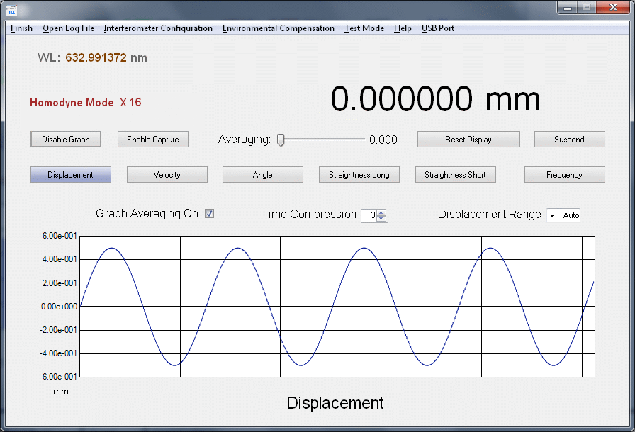
The first set are the selection buttons at the top of the window. Note that except for USB Port, these require only a single click to activate:
The log file is closed and its name and path are saved upon exiting the GUI.
With the Teensy in particular, Windows may get confused about which COM Ports are available and pop up multiple ones with the same number. In that case, it's the first instance that should be valid.
The values are signed long integers of the designated displacement(s) in nanometers including averaging and axis flip. (Same as the readouts.) The "*" can be used by the parser at the receiving end to detect the end of line.
To indicate that the Monitor COM port is active, a "+" will appear to the left of the "Graph Averaging On" label, flashing at the rate of the data lines being sent. Its color is subject to change without notice. :) Note that the graph does NOT need to be visible for the data to be transmitted.
Note: Once a USB port has been opened, the selection cannot be changed or closed. Code to close an open USB port is purported to do bad things and has been disabled. If an incorrect USB port was selected by accident, exit the GUI and restart. Any open USB port will be closed upon exiting.
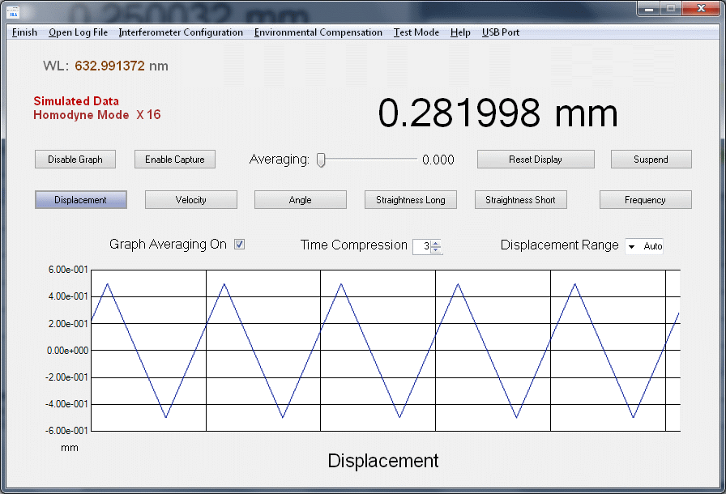
These may all be accessed via Alt-first letter.
The next set are the buttons, checkboxes, and other widgets on the main window:
When the "Encoder" checkbox in Interferometer Configuration is checked µMD2 will use the constant small angle increment WTIHOUT the Trig calculation and the text will change to "Encoder Angle". This is useful with rotary encoders and ring laser gyros.
There are three options to select what data is saved:
The format is: "D: Displacement N: Sequence Number" where Displacement and Sequence Number are values in decimal. The Displacement an integer multiple of wavelength times the multiplier depending on the type of interferometer. Example:
D: 51643 N: 15345
Assuming the use of a Plane Mirror Interferometer (10706A) with a Homodyne Multiplier of 4 ("#define HomodyneMuliplier 4" in the firmware), the Displacement would be 51643 * 39.56 nm or approximately 2.043 mm.
The format in Single Axis Mode (8 values) is: "REFFrequencyCount MEASFrequencyCount Displacement VelocityCount Phase SequenceNumber LowSpeedCode LowSpeedData". Example:
1534 1532 51643 2 144 15345 0 0
The format in Mulitiple Axis Mode (16 Values) is: "REFFrequencyCount MEAS1FrequencyCount Displacement1 Velocity1Count Phase1 SequenceNumber LowSpeedCode LowSpeedData MEAS2FrequencyCount Displacement2 Velocity2Count Phase2 MEAS3FrequencyCount Displacement3 Velocity3Count Phase3".
With Homodyne mode, only Displacement1, Velocity1Count, SequenceNumber. LowSpeedCode, and LowSpeedData are valid. The others will probably be 0s.
The format regardless of mode is: "R: REFFreqeuncyCount M: MEASFrequencyCount D: Displacement V: VelocityCount P: Phase N: SequenceNumber T" where the "T" signifies that this is Test Mode data. Example:
R: 0 M: D: 51643 V: 2 P: 0 N: 15345 T
Caution: The log file can grow rapidly - especially where all the data is stored - so it's probably not the sort of thing to do for hours on end unless you have stock in a disk drive manufacturer! :)
All these formats have a fixed number of fields that are space-delimited. Thus importing the log file into programs like Excel or Matlab should be straightforward (if the size of the file doesn't break it).
The effects differ for homodyne and heterodyne:
For Firmware V3.15 or higher with super-sampling (which is similar to interpolation), some averaging is recommended but it can be much smaller. A setting of 0.900 is usually acceptable. For Firmware V261.28 or higher with phase-based interpolation, averaging may be useful in some instances for very small p-p displacement (<50 nm) but is generally not required.
The Averaging coeficient is saved upon exiting the GUI.
Suspend is useful when making adjustments to the inteferometer beam path and/or laser.
The Time Compression factor is saved upon exiting the GUI.
The format is slightly modified when Frequency mode is selected. This graphic shows the actual DFT of the triangle waveform in the one above. Note that the DFT coefficients go as 1/N rather than 1/N-squared because it's actually using the velocity data, which is a squarewave.
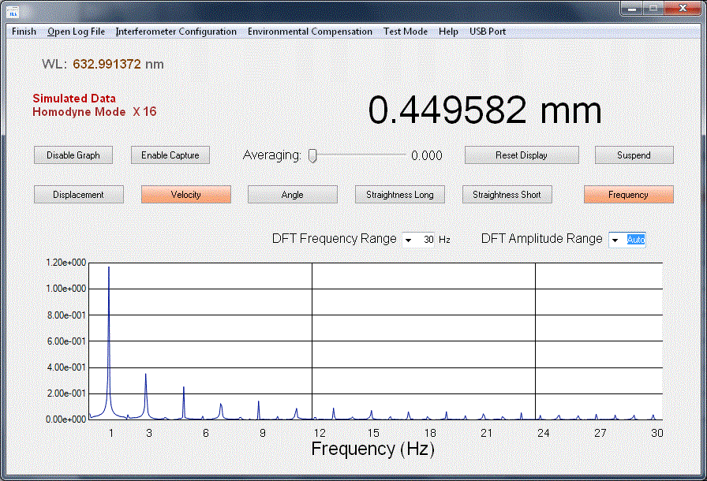
The horizontal scale is approximately accurate for real data. The vertical scale is somewhat arbitrary. The Main Readout shows Displacement data when in frequency mode.
There may still an error of up to 25 percent is the actual values since they depend on the sample rate being used, which varies depending on the sample rate. The uMD technical department has not gotten around to provided corrected labels, can you believe that? :)
Selecting Frequency sets Time Compression to 1 since the graph data is used for the DFT calculation. There will also be a delay in the Frequency plot accuracy depending on the DFT Frequency Range and input signal as data is accumalated.
The DFT Frequency Range is saved upon exiting the GUI.
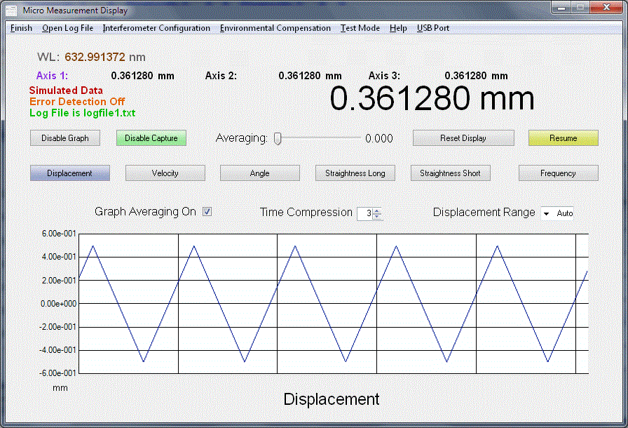
The units for the Main Readout, as well as for the graph vertical axis (all except Frequency mode) are selected in the Interferometer Configuration window. The options are nm, µm, mm, m, in, and ft for all but angle, which has arcsec, arcmin, and degree. For velocity, "/s" is added. The same units also apply to the graph "Range" selection and vertical axis of the graph.
For encoder applications with environmental compensation OFF and "LI / Other" selected in "Interferometer Configuration", the resolution will be WL / (HomodyneMultiplier * 2).
Linear coefficienets:
These settings only affect linear measurements.
Units (as appropriate)
Known quirk: If neither the COM Port or Test Mode is active, switching among the Units buttons will only change the Units lable and/move the decimal point/precision without affecting the readings. Just thought you should know. ;-)
Parameters (as appropriate):
Miscellaneous:
The graphic below shows µMD1 being used to test a home-built ring laser gyro. It is being rotated by hand on a Lazy Susan turntable. A combination of Angular Reflector Spacing and the other resolution parameters can be used to adjust the scale factor to read correctly.
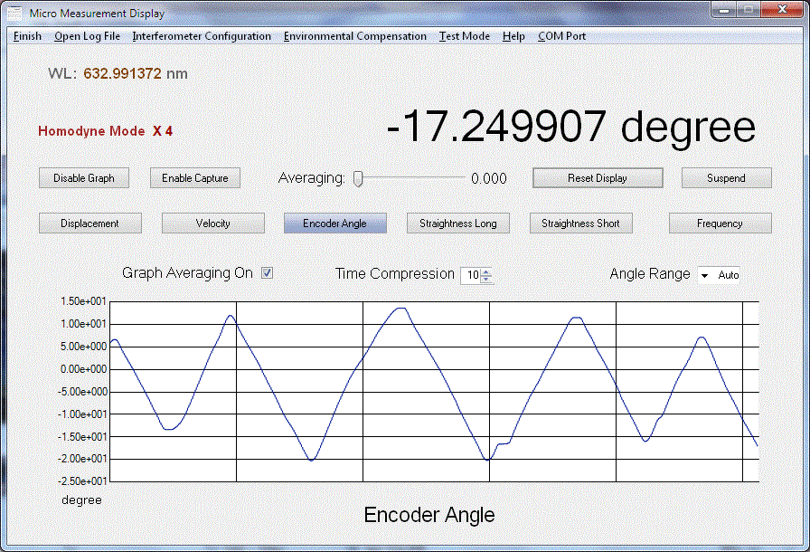

If the Temperature Auto checkbox is checked, nothing should change since the homodyne firmware doesn't send any sensor data.
Test Mode sends 34 °C.
If the Pressure Auto checkbox is checked, nothing should change since the homodyne firmware doesn't send any sensor data.
Test Mode sends 567 mm/Hg.
If the Humidity Auto checkbox is checked, nothing should change since the homodyne firmware doesn't send any sensor data.
Test Mode sends 89%.
For use with encoders, it can be set to almost anything.
For use with encoders, it should be set to Off.
Note 1: With the current GUI, the Factors for Temperature, Pressure, and Humidity will change based on the entered values However, their exact value is not guaranteed to be meningful and should only be considered for trends. This was supposed to be fixed when the environmental calculations were corrected using the NIST formulas, but the staff assigned to do the work took a couple decades off, sorry.
Note 2: With Environmental Compensation turned OFF, the vacuum wavelength is used in calculations. Therefore, Environmental Compensation should be turned ON for laser interferometers even if using standard values.

The Waveform is saved upon exiting the GUI.
The REF value is saved upon exiting the GUI.
Note that while Test Mode will operate in Angle mode, the values it sends are always linear displacements. Thus, what this really means may be too difficult for the average human brain to evaluate and may result in an overload and an unintentional brain reboot endless loop. :)
The Units selection is saved upon exiting the GUI.
Under some conditions, this may cause the current values of displacement from the SG-µMD2 firmware to be displayed instead of resetting the GUI readouts to 0s when the COM Port is opened, which may be a feature or a bug depending on your point of view. Never mind that diagnostics and reset should be totally unrelated to anything. Live with it or figure out how it works and then tell us. ;-)
The Diagnostic Readout state is saved upon exiting the GUI.
The "#define Homodyne n" or "#define Heterodyne n" line in the firmware specifies how many axes will be displayed. The value for "n" may be 1 or 3. Setting it to 2 will do the same thing as 3.
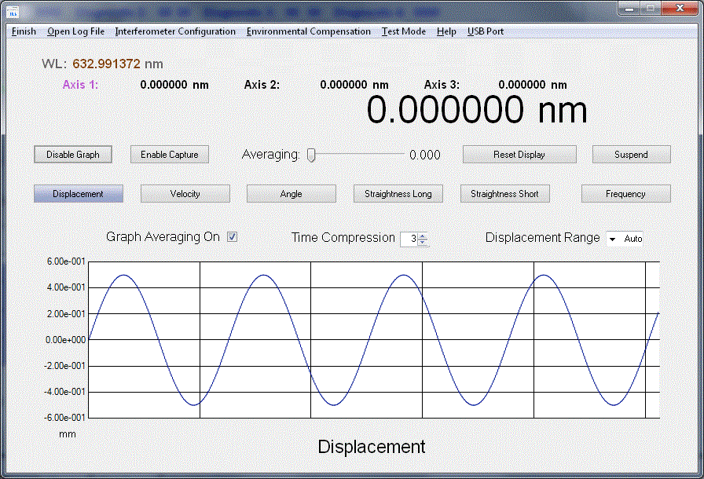
All GUI functions apply to the primary axis, which defaults on startup to Axis 1. The primary axis is what the Main Readout, REF/MEAS/DIFF frequency displays, frequency analysis, averaging, and graph apply to. Clicking on the Axis 1, Axis 2, or Axis 3 labels will select it to be the primary axis and change the color of the selected axis label to identify it as the primary axis. The units of the primary axis are also used for the others. Error detection (if enabled) only applies to the primary axis. Averaging is NOT applied to the Axis 1, Axis 2, or Axis 3 readouts, even the one that is the same as the primary axis.
Note that in Multiple Axis Mode, the communications format sends somewhat more data over the USB COM port and the GUI must perform more computation. Thus this may cause problems for a wimpy pre-Jurassic PC operating on the hairy edge of what's possible. Once Multiple Axis Mode is entered using the interferometer hardware, the only way to return to Single Axis Mode is to restart both the firmware and GUI. This is because neither has any way to know whether dropouts of measurement clock signals are due to a beam path being momentarily interruprted or an axis actually being shut off (whatever that might mean).
Test Mode is also capable of exercising all three axes singly or in combination but the function generator data will be the same for all. This is controlled by the Multiple Axis Mode checkbox. When enabled, Axis 1, Axis 2, and Axis 3 checkboxes will appear below it with Axis 1 being the default on startup. Turning Multiple Axis Mode off will put the GUI back in Single Axis Mode. But this will be overidden when Test Mode is turned off if the USB port is enabled and the firmware is running with multiple axes.
Multiple Axis GUI support is currently under development. Specifications and behavior are subject to numerous changes without notice. ;-) However, no major features beyond what are described above are anticipated to be implemented in the GUI.
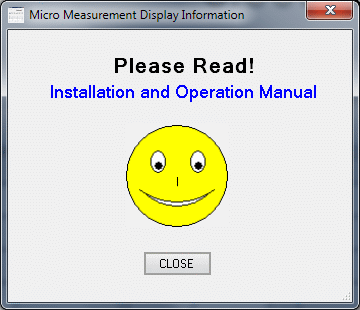

Note: The LEDs in the unused third block for heterodyne may be used as status indicators for interpolation and/or averaging. If you are into flashy displays, populate LD5 and LD6 with the LEDs of your choice of decorator colors, along with the associated resistors but NOT the UA9637/9.
Approach 1 - Interpolation based on phase measuremet of REF and MEAS waveforms
The algorithm is conceptually very simple: For each sample period (currently 1 ms), multiple cycles of the REF and MEAS digital inputs to the Teensy are captured at high speed and stored as digital waveforms (Os and 1s) similar to what would be done in a Digital Storage Oscilloscope (DSO). This is currently a 4 instruction loop implemented in assembly code with a sample rate around 40 MHz. (The I/O on the Teensy actually sucks big time! While the CPU clock speed is 600 MHz, it takes 15 cycles to implement that 4 instruction loop!) The locations of the edges (rising or both rising and falling) are then located and averaged over multiple cycles to estimate the relative phase between REF and MEAS. That averaging greatly reduces the jitter of the edge positions caused by noise in the REF and MEAS analog signals and optical receiver electronics. The same Teensy hardware counters used for the normal µMD2 firmware keep track of the number of REF and MEAS cycles since the start of the Universe (or at least since boot). ;-) The objective of the interpolation firmware is to determine the relative phase shift between REF and MEAS and use that for the fraction of the displacement called "Phase".
I thought that would be simple or at least straightforward, but was not able to get it to work for a long time and almost gave up due to excessive brain temperature rise and shutdown. Not because the averaging is challenging - a version has been operational since mid-2021 - but there were giant size glitches where REF and MEAS transitions when nearly coincident and due to noise, the computed displacement and phase were inconsistent as shown in the screenshot below:
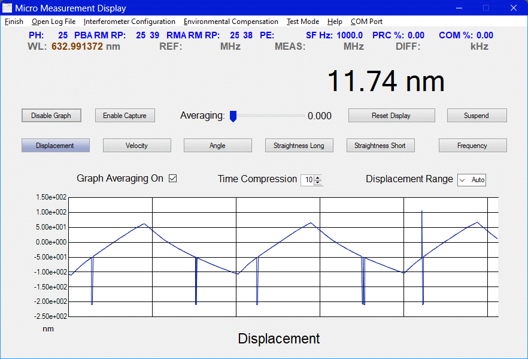
And it's a lot worse than it looks because they are almost always multiple glitches next to one-another that may go up or down but hidden by the sub-sampling of the uMD plot.
(However, the decaying exponential in the plot above IS correct since it used the capacitor voltage on a 555 timer as the PZT drive signal while those below use a triangle wave from a function generator.)
However, as of January 2025 (new year, perhaps that's the reason) or more likely using a more systematic approach, phase interpolation is now operational in firmware V261.05 and above. The glitches were removed through the use of an insanely convoluted state machine implemented in firmware that identifies illegal transitions and corrects them. The basic idea is that for slowly varying Displacement, a change in phase by more than ± 180 degrees MUST be accompanied by a corresponding change in the Displacement count for it to be legal. So, using the averaged phase as the reference since that should be very accurate, the Displacement count is corrected up or down by one count to make the overall transition legal. The screenshots below show the displacement of a mirror on a PZT attached to a High Stability Plane Mirror Interferometer (HSPMI) driven by a triangle waveform with several amplitudes from 300 nm to 1 nm p-p:
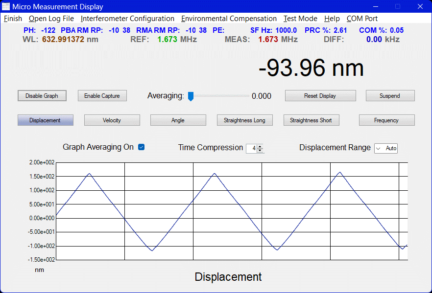
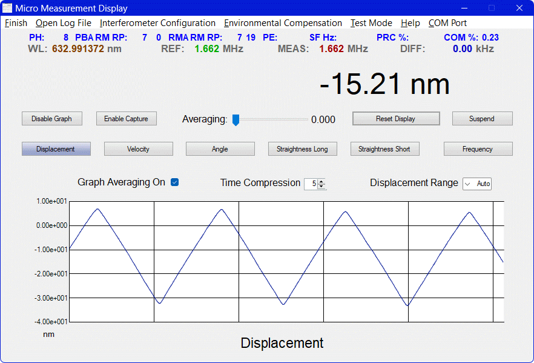
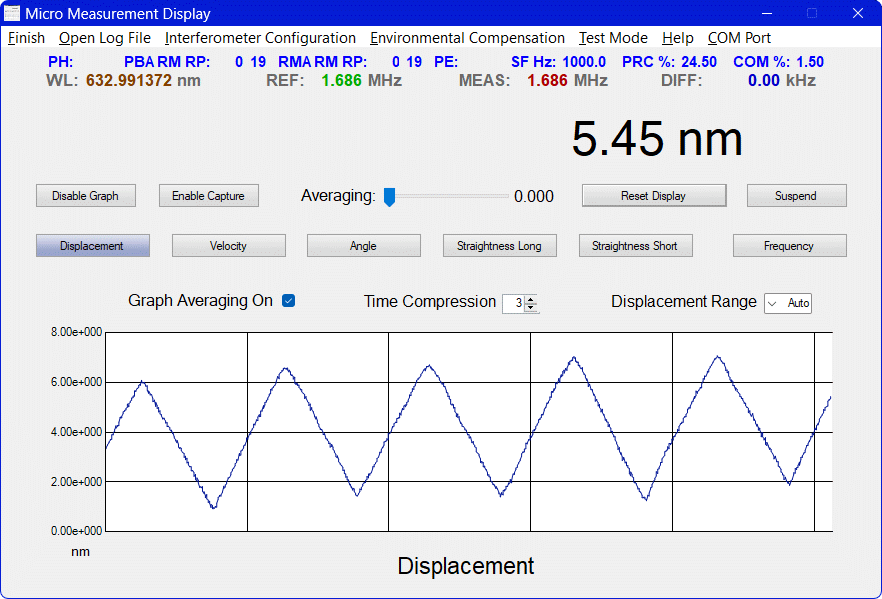
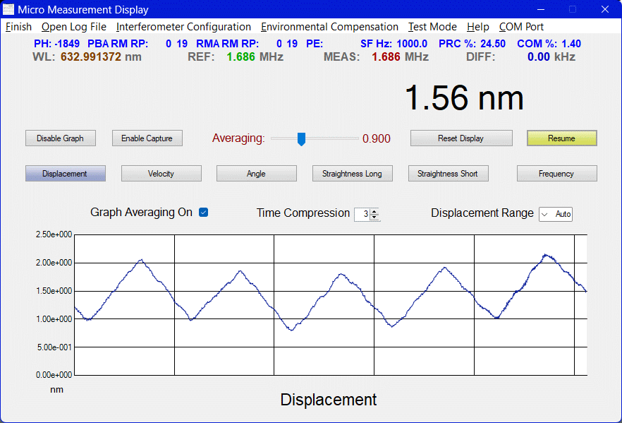
No, these displays are not of the electrical signal but the actual displacement measured using µMD2!
At 1 nm, there is some "wandering" possibly due to the relative sampling of the REF and MEAS edges with respect to the 600 MHz CPU clock. This was present with µMD1 interpolation as well (though it was much worse). But even that doesn't make much sense. The jitter in sampling would then be order of 1.66 ns. That is only around 188th of the REP/MEAS period so at most it could result in an error 1.66/188*80 (the integer resolution) which is less than 1 nm, or perhaps twice that. Of course if it is the instruction timing and not the clock, it could be several times as large. So still a possibility. I did mostly rule out ripple in the HeNe laser power supply but using a very quiet heavily filtered linear supple as a test. And there was no noticeable difference in the wandering. The µMD Tech Support Department was never able to locate the cause of that either, despite the billions of nanoseconds devoted to it. But there are also thermal effects and vibration. It is almost impossible to really measure these nm-scale changes without outside disturbances dominating. In fact, to record these data, a PZT (piezo-beeper element) had to be secured directly to the HSPMI. And even then any vibration like tapping the table or even walking nearby still shows up in the display.
Note that this approach only works for very slow changes in displacement - on the order of 0.01 mm/second or less - those where the discplament count doesn't change by more than ± 1. Above that, the following can be used (and will probably be added to substitute for the phase interpolation which would be worse than useless at higher slew rates.
Approach 2 - Supersampling in the firmware
Rather than implement actual interpolation as above which was causing my brain to overheat and shut down (not to mention the hair loss), this does a moving average, but in the firmware rather than GUI. The results in a much better frequency response. Since there are no critical boundary condition issues and race conditions (though boundary noise is still present, though to a lesser degree).
This is implemented in firmware V3.15 (and probably higher to come) and should be quite usable. The parameter for the moving average may be set as a (#define NumbSamples) between 1 and 1000. 1 is essentially no averaging while 1000 would result in way too much smoothing. 100 is the default setting and is a good compromise - but experimentation is welcome.
The uMD Research Department is spending all their time (around 0.01 hours per day) on this effort so stay tuned. ;-)
Here is a screenshot of displacement with a p-p amplitude of around 9 nm:
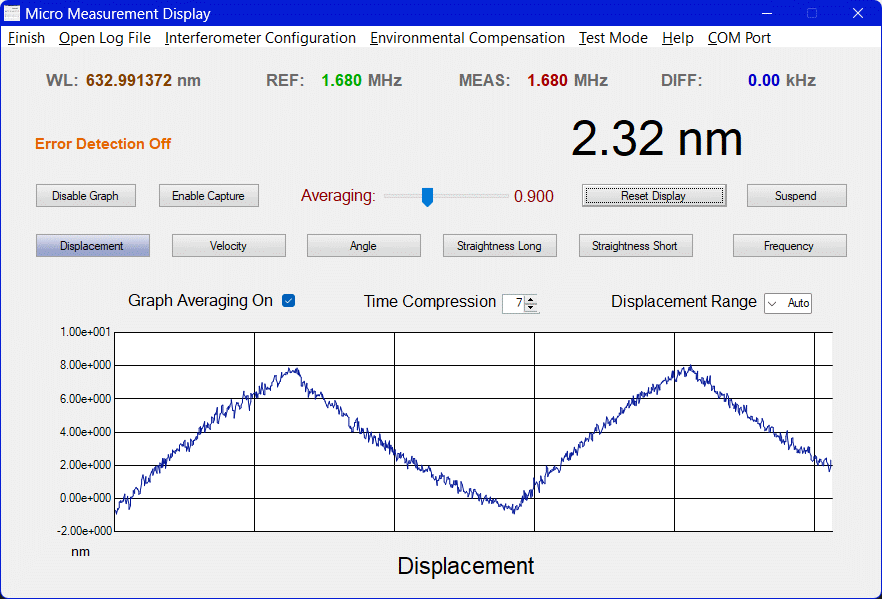
So the typical "jiggly" amplitude is under 1/2 nm. However, under some entirely unspecified random conditions, they could be much larger, which is what that 0.01 hours is devoted to solving.
Stay tuned.